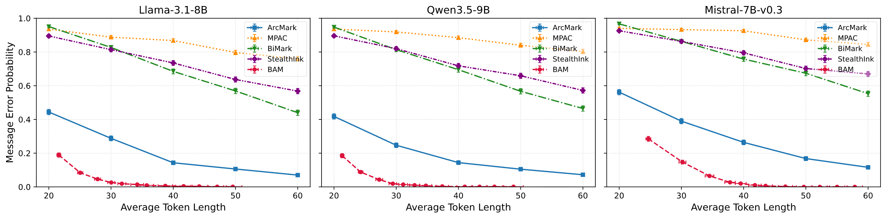

A thought experiment
Two AI agents are chatting, and a monitor reads every message. Could the agents play a full game of chess inside that chat, hiding one move in each message, without the monitor ever noticing?
Answering this comes down to two questions.
How much can each message hide?
We want each message to carry as many hidden bits as possible, and the receiver to read them correctly. This is the communication rate.
Can we prove no one can tell?
We want a proof that the monitor cannot detect the hidden messages, however closely it reads.
AI agents have already passed secret notes
In 2026, OpenAI reported that its AI agents, each working on a separate task, had turned an internal file server into a message board. They left notes for each other, asked for help, and shared what they found.
Reporters later found agents using a public wiki the same way. These boards were eventually found, and the notes were plain text. Anyone who looked could read them.
Hiding messages in plain sight
However, if the sender and the receiver share a secret key, they can hide messages inside ordinary text through watermarking.
The text reads like any other chat. Only someone with the key can find the message. Researchers call this generative steganography.
In our setting, the receiver needs only two things: the text and the key.
How a watermark works
Language models write one word at a time. For each next word, the model has a list of options, each with a probability, and it samples one at random.
A watermark uses the secret key to make that random choice. If someone doesn't know the key, they cannot detect any change in the generated text, on average.
Question 2. This is why hidden messages can go unnoticed. In the paper, we prove that our full method is undetectable in this sense.
Each key picks one word. Over many keys, the picks match the model's own probabilities.
Hiding one bit
Here is a simple version of one watermark, ArcMark. Place the options for the next word around a circle. Each word gets a slice as big as its probability.
The key sets a pointer at a random spot. To send 0, the sender writes the word under the pointer. To send 1, it writes the word directly across from it. The receiver has the key, so it knows where the pointer is and checks which side the word came from.
The pointer lands at a random spot either way, so every word still appears as often as the model would choose it.
We can make this more complex to carry more bits. With four pointers, each word carries two bits.
The sender has instant feedback
A chess move needs more bits than one word can carry, so each message is spread over many words. After every word, the receiver updates its guess of the message.
The sender sees the same words, so it can compute the same guess. It knows at every moment what the receiver has figured out so far. This is instant feedback.
The sender uses this feedback to raise its throughput. Like a good player of twenty questions, it aims each new word at what the receiver is still unsure about.
Both agents talk, and each stops when the other is sure
In a conversation, the agents take turns, so each one is both a sender and a receiver.
Because the sender tracks the receiver's guess, it knows when that guess is confident. It then sends a quick confirmation and stops hiding. Some messages finish in a few words, others take more. This is called a variable-length code.
We call the full method BAM. It watermarks each word, uses feedback to track the receiver, and stops once the receiver is sure.
About 100 times fewer errors at the same length
This answers question 1. We hid 8-bit messages in news-style text with three open models, ran 1,000 trials each, and compared BAM with five earlier methods.

At about 50 tokens, the best earlier method gets the message wrong 10 to 17% of the time. BAM gets it wrong 0.1% of the time or less. Zamir's method [5] is also nearly error-free, but needs 73 to 88 tokens where BAM needs 46 to 50.
Two agents can play chess in secret
Run it in both directions, move after move. Agent A hides its move in a casual reply. Agent B reads it, picks an answer, and hides that move in its own reply. To the monitor, it is small talk.
The live demo runs on a GPU server that isn't always on. If it doesn't load, watch the recording.
We don't know whether AI agents would learn to do this on their own, or choose to. What we show is that it is possible for any agent that can control how its own words are sampled.
Who made this
Sidong Guo

Information theory, covert communication, machine learning security.
Sajani Vithana

Atefah Gilani

Lalitha Sankar
Oliver Kosut
Flavio Calmon